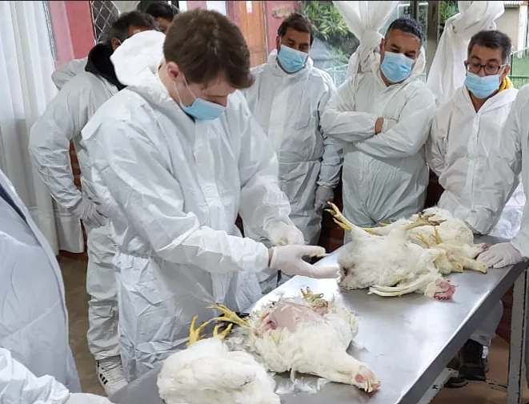
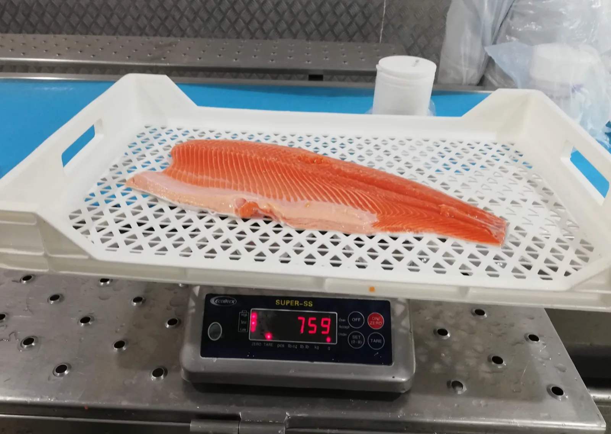
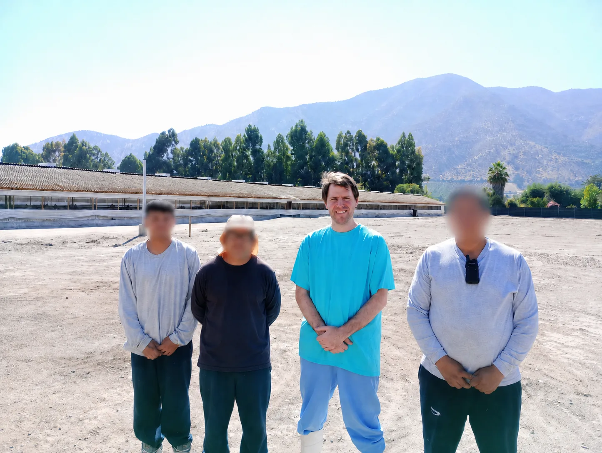
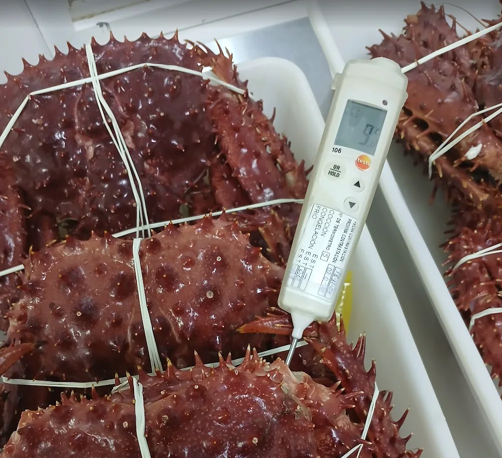
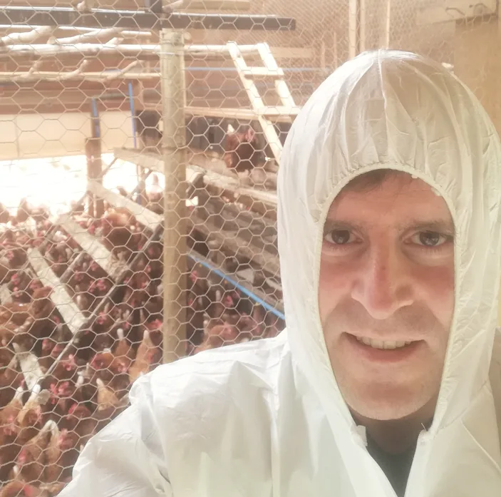
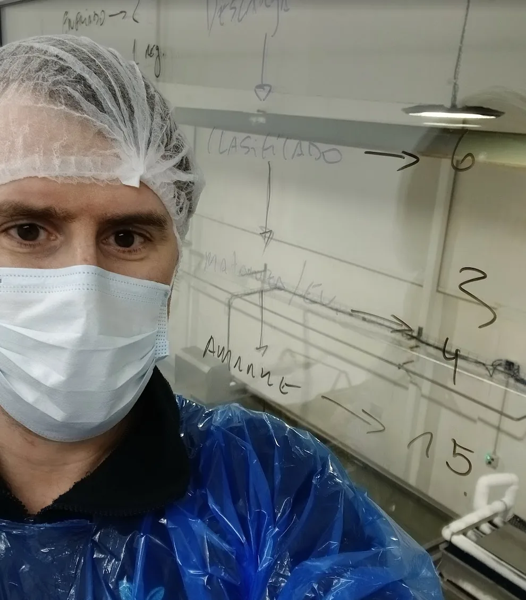

Diagnóstico
Auditoría de brechas BPM / HACCP
Revisión técnica del proceso, documentación y cumplimiento operativo.
- Matriz de brechas
- Priorización por riesgo
- Plan correctivo inicial
Asesoría para granjas, plantas de alimentos y pesqueras que necesitan ordenar inocuidad, cumplimiento, registros, producción animal y calidad / inocuidad alimentaria.

Acompañamiento integral desde el diagnóstico hasta la validación, con experiencia operativa real en plantas de proceso y granjas.
Acompañamiento técnico en granjas: sanidad, producción y bienestar animal. Diagnóstico integral y planes de mejora en terreno.
Auditorías en el marco de Acuerdos de Producción Limpia. Registro oficial vigente para acompañar a empresas en su certificación.
Evaluación y acompañamiento en Buenas Prácticas de Manufactura. Identificación de brechas y plan de acción correctivo.
Diseño, implementación y mejora de sistemas HACCP en distintos procesos alimentarios. Desde diagnóstico hasta validación del plan.
Experiencia directa en gestión de producción y calidad en plantas pesqueras. Estándares de exportación y organización de procesos.
Asesoría integral en inocuidad para distintos rubros. Gestión de riesgo y cumplimiento normativo para la industria alimentaria.
Formato pensado para empresas que necesitan resolver brechas, ordenar procesos o preparar equipos.
Revisión técnica del proceso, documentación y cumplimiento operativo.
Acompañamiento documental y operativo para ordenar estándares internos.
Diagnóstico puntual para problemas sanitarios, productivos o de proceso.
Granjas avícolas, plantas pesqueras, auditorías e implementación de buenas prácticas.






Primera conversación sin compromiso. Coordino una visita o reunión para entender tu situación y presupuestar la asesoría.